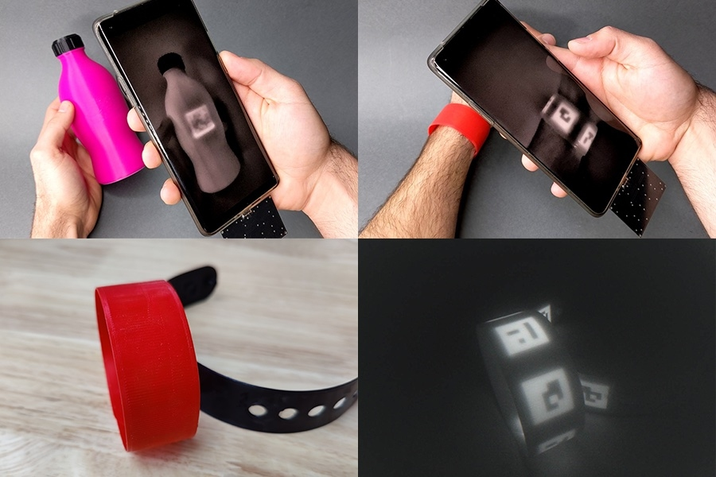

Invisible tagging system enhances 3D object tracking
Alex Shipps
Stop me if you’ve seen this before: a black and white pixelated square in lieu of a physical menu at a restaurant. QR codes are seemingly ubiquitous in everyday life. Whether you see one on a coupon at the grocery store, a flyer on a bulletin board, or the wall at a museum exhibit, each code contains embedded data. Unfortunately, QR codes in physical spaces are sometimes replaced or tampered with to trick you into giving away your data to unwanted parties — a seemingly harmless set of pixels could lead you to dangerous links and viruses. Researchers from MIT's Computer Science and Artificial Intelligence Laboratory (CSAIL) have developed another potential option: BrightMarker, an invisible, fluorescent tag hidden in 3D-printed objects, such as a ball, container, gadget case, or gear. The researchers believe their system can enhance motion tracking, virtual reality, and object detection.
To create a BrightMarker, users can download the CSAIL team’s software plugin for 3D modeling programs like Blender. After placing the tag within the geometry of their design, they can export it as an STL file for 3D printing. With fluorescent filaments inserted into the printer, users can fabricate an object with a hidden tag, much like an invisible QR code. Users will need to embed their markers into an object before it’s fabricated, meaning the tags cannot be added to existing items. The fluorescent materials enable each tag to emit light at a specific near-infrared wavelength, making them viewable with high contrast in infrared cameras. The researchers designed two attachable hardware setups capable of detecting BrightMarkers: one for smartphones and one for augmented reality (AR) and virtual reality (VR) headsets. Both have the capacity to view and scan the markers, which resemble glow-in-the-dark QR codes. Surrounding objects could be obscured from view using a longpass filter, another attachable piece that would only spot the fluorescence. BrightMarkers are imperceptible to the naked eye — and unobtrusive, meaning they don’t alter an object’s shape, appearance, or function. This makes them tamper-proof while seamlessly embedding metadata into the physical world. By adding a layer of connectivity between data and physical objects, users would have access to a more interactive experience with the world around them. “In today's rapidly evolving world, where the lines between the real and digital environments continue to blur, there is an ever-increasing demand for robust solutions that seamlessly connect physical objects with their digital counterparts,” says MIT CSAIL and Department of Electrical Engineering and Computer Science PhD candidate Mustafa Doğa Doğan. “BrightMarkers serve as gateways to 'ubiquitous metadata' in the physical realm. This term refers to the concept of embedding metadata — descriptive information about the object's identity, origin, function, and more — directly into physical items, akin to an invisible digital signature accompanying each product.”
BrightMarkers in action
Their system has shown promise in virtual reality settings. For example, a toy lightsaber with an embedded BrightMarker could be used as an in-game tool to slice through a virtual environment, using the tag-detecting hardware piece. This tool could enable other in-game objects for a more immersive VR experience. “In a future dominated by the AR and VR paradigm, object recognition, tracking, and traceability is crucial for connecting the physical and digital worlds: BrightMarker is just the beginning,” says MIT CSAIL visiting researcher Raúl García-Martín, who is doing his PhD at the University Carlos III of Madrid. “BrightMarker’s seamless tracking marks the start of this exciting journey into a tech-powered future.” As for motion tracking, BrightMarkers can be implemented into wearables that can precisely follow limb movements. For example, a user could wear a bracelet with an implanted BrightMarker, enabling a piece of detection hardware to digitize the user’s motion. If a game designer wanted to develop an authentic first-person experience, they could model their characters’ hands after the precise tracking each marker provides. The system can support users with impairments and different limb sizes, too, bridging the gap between digital and physical experiences for a wide user base. BrightMarkers could also be tracked across the supply chain. Manufacturers on-site could scan the tags at different locations to grab metadata about the product’s origin and movements. Likewise, consumers could check a product’s digital signature to verify ethical sourcing and recycling information, similar to the European Union’s proposed Digital Product Passports. Another potential application: night vision monitoring in home security cameras. If a user wanted to ensure their possessions were safe overnight, a camera could be equipped to watch the objects with hardware designed to trace and notify the owner about any movements. Unlike its off-the-shelf counterparts, this camera wouldn’t need to capture the user’s whole room, thus preserving their privacy.
Better than InfraredTags and AirTags
Doğan and his team’s work may sound familiar: they previously developed InfraredTags, a technology for embedding data on 3D-printed tags within physical objects, which was nominated for a People's Choice Best Demo Award at the 2022 ACM CHI Conference on Human Factors in Computing Systems. While their previous project only worked for black objects, users have multiple color options with BrightMarker. With its fluorescent materials, the tags are configured to emit light at a specific wavelength, making them much easier to isolate and track than InfraredTags, which could only be detected at low contrast due to noise from other wavelengths in the captured environment. “The fluorescent filaments emit a light that can be robustly filtered using our imaging hardware,” says Doğan. “This overcomes the ‘blurriness’ often associated with traditional embedded unobtrusive markers, and allows for efficient real-time tracking even when objects are in motion.” In comparison to Apple’s AirTags, BrightMarkers are low-cost and low-energy. Depending on the application, though, one potential limitation is that the tags cannot be added to objects post hoc currently. Additionally, tracking each tag can be hindered if the user’s hand or another item in the room obstructs the camera’s view. As a remedy for potentially enhancing detection, the team recommends combining this technology with magnetic filaments so that the object’s magnetic field can also be tracked. The markers’ detection performance could also be improved by producing filaments with higher fluorochrome concentrations. “Fluorescent object tracking markers like BrightMarker show great promise in providing a potential real-world solution for product tracking and authentication," says Andreea Danielescu, director of the Future Technologies R&D group at Accenture Labs. “In addition to supply chain and retail applications, they could also be used to verify the authenticity of products, such as vegan handbags.” “Immersive technologies require powerful scene understanding capabilities,” says Google research scientist Mar Gonzalez-Franco, who was not involved in the work. “Having invisible markers embedded, like the ones from BrightMarker, can simplify the computer vision needs and help devices identify the objects that are interactable and bridge the gap for the users of AR and VR.” Doğan is optimistic about the system’s potential to enmesh metadata in our everyday lives. “BrightMarker holds tremendous promise in reshaping our real-life interactions with technology,” he notes. “As this technology continues to evolve, we can envision a world where BrightMarkers become seamlessly integrated into our everyday objects, facilitating effortless interactions between the physical and digital realms. From retail experiences where consumers can access detailed product information in stores to industrial settings, where BrightMarkers streamline supply chain tracking, the possibilities are vast.” Doğan and Garcia-Martin wrote the paper along with MIT CSAIL undergraduate students Patrick Haertel, Jamison O’Keefe, Ahmad Taka, and Akarsh Aurora. Raul Sanchez-Reillo, a professor at University Carlos III of Madrid, and Stefanie Mueller, a CSAIL affiliate and associate professor in the MIT departments of Electrical Engineering and Computer Science and Mechanical Engineering, are also authors. The researchers used fluorescent filaments provided by DIC Corp. They will present their findings at the Association for Computing Machinery’s 2023 User Interface Software and Technology Symposium (UIST).
Link to original article Go back to homepage